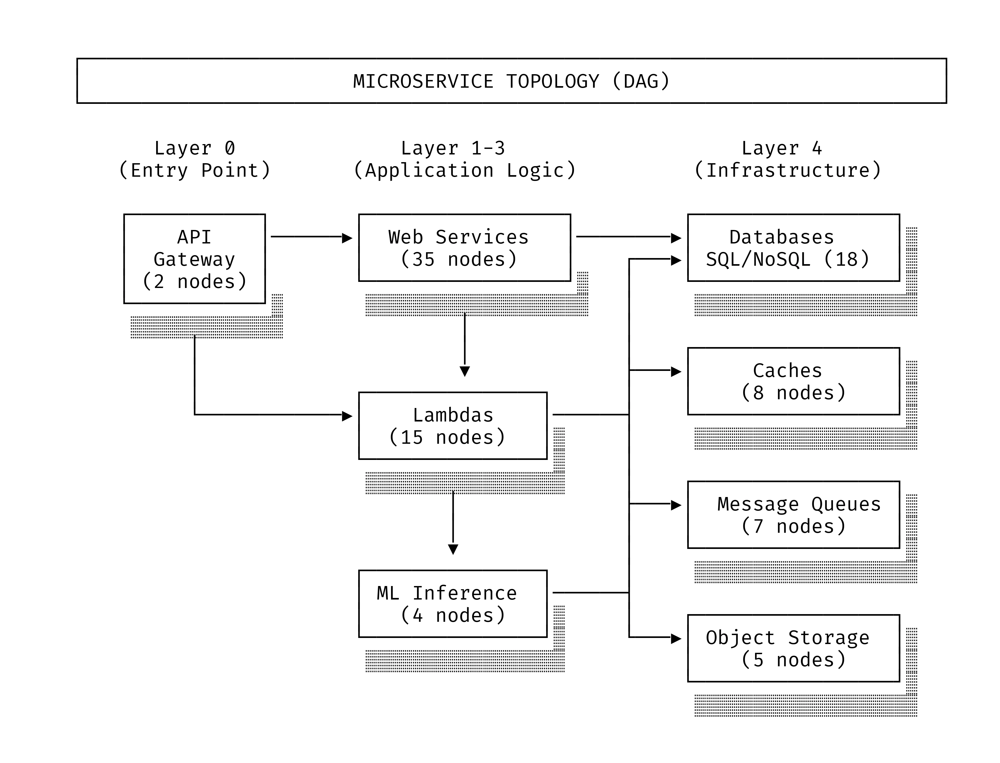
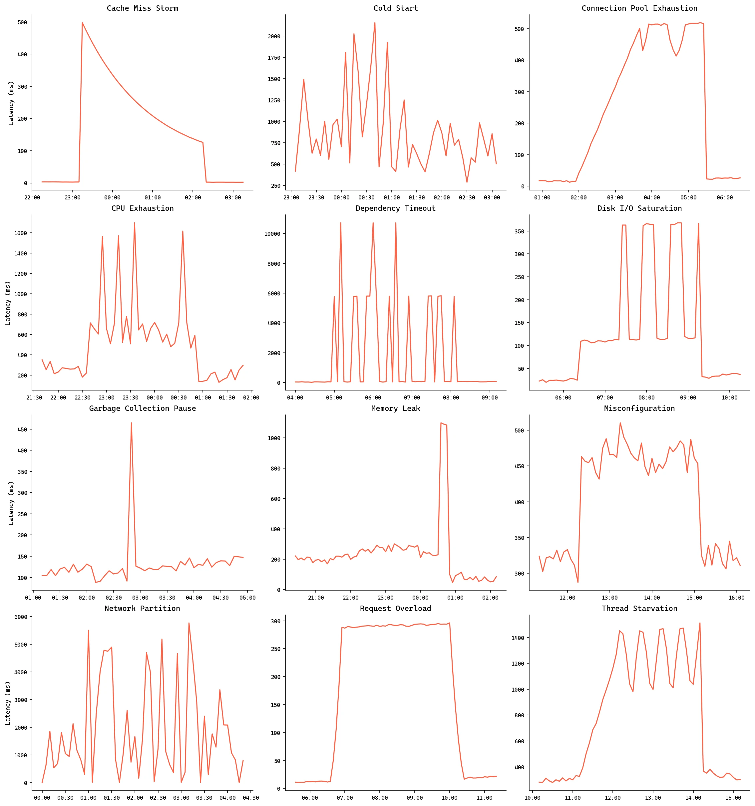
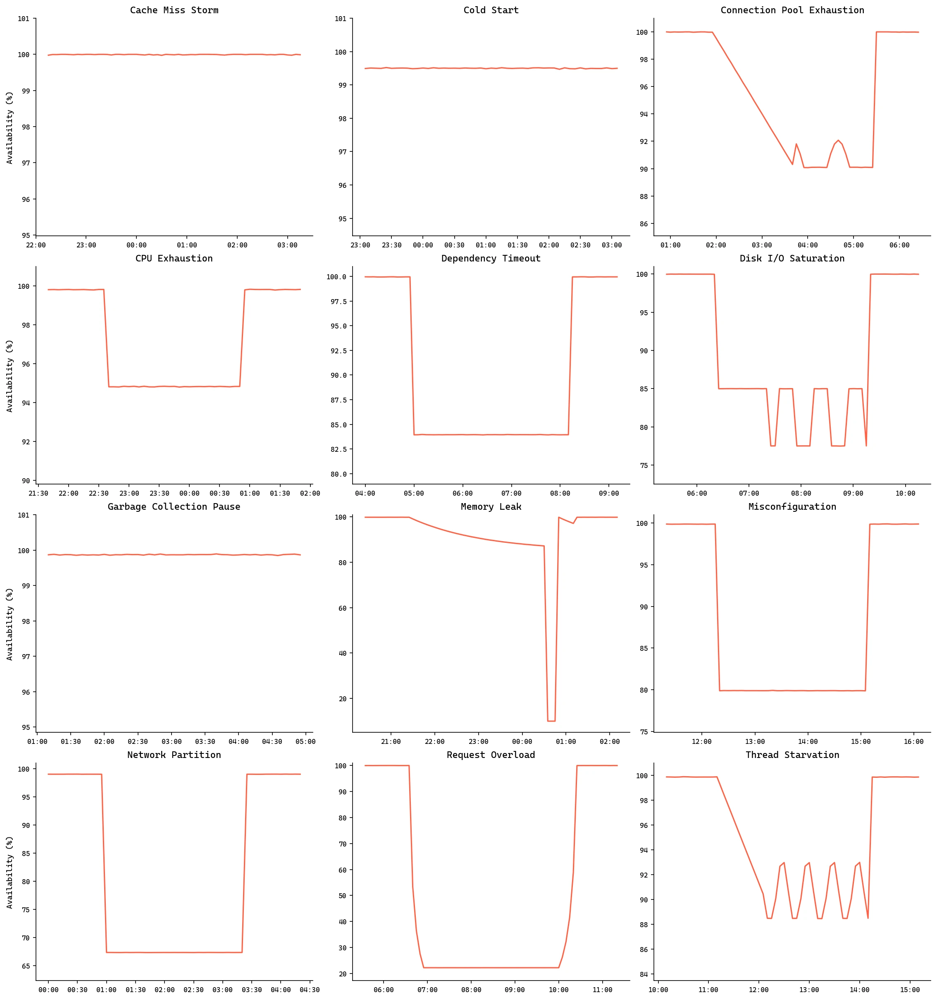
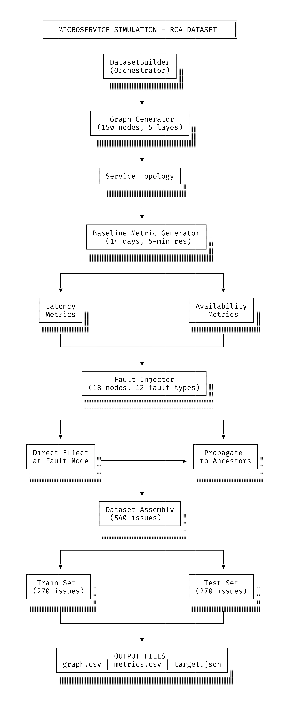

written by Roni Kobrosly on 2026-02-02 | tags: observability engineering open source machine learning
This is part 2 of a series of posts on observability for AI/ML services and their supporting services. Part 1 (applying OpenTelemetry to classic ML services) can be read here.
Let's say you've fully instrumented your organization's applications with OpenTelemetry (OTel). You're capturing tons of useful metrics, trace data, and service attributes. You're even applying a sampling strategy so that your manager's manager won't chew you out for blowing through the department budget. At the holiday party, you share in a hearty laugh as your team talks about how "Mean Time To Recovery", your most critical metric, will be halved. "Did you pour me a pinot grigio? It's great, who makes this?" 🍷
Hold up. Even if we put aside all of the organizational and process challenges that won't be solved by OTel (e.g. how does the paging system work? How much must be documented before paging the responsible team? Whose permission is needed to escalate this incident? etc etc.), there are still many reasons why you shouldn't prematurely celebrate. This blog post focuses on this reason: With full tracing, the volume of data can be overwhelming, making it hard to find the "signal" within the noise during a major incident. After all, this trace and metric data still needs to be examined in on dozens of dashboard plots and manual searching. That is, unless you've thought about putting your rich OTel data towards some automated root cause analysis (or fault localization) algorithm.
There are a few categories of algorithms for automating root cause analysis, and they can be applied to a number of possible observability metrics (latency, availability/uptime, error code counts, etc.)
This covers very general, and often intuitive rules-of-thumb. Also, none of these require anything other than straight software engineering to implement.
These approaches typically involve some aspect of counterfactual thinking. They also generally involve a graph of known service dependencies.
This would involve a process flow like the following:
To my surprise, while you'll hear and see plenty of discussion around the above approaches, I've never heard of actual production use of these approaches. There might be several reasons for this.
It'd be great to dig deeper into these various fault localization approaches to understand how well they compare, what the conditions are for them to work well, etc. But here's the rub. It's unfortunate but understandable that there isn't much gold standard, publicly available log, metric, and trace data on large systems and incidents they experience (you don't hear this: "Hi, we're a large organization that serves millions of people, and here are all of the logs behind that huge outage we had last month..."). So, if you can't use real data, you simulate it of course!
To find out which of these approaches actually holds water, we need a simulation — a digital petri dish where we can break things on purpose and see who identifies the culprit first. I drew inspiration from the PetShop analysis by Hardt et al., and I extended their work into a larger simulation. Think of it as a stress test for RCA algorithms, specifically designed to mimic the messy, interconnected reality of modern microservices.
The simulation involves a 100+ node microservice topology. It’s structured across five hierarchical layers, mimicking a real enterprise stack:

Before we break things, we need to know what "good" looks like. The sim generated 14 days of baseline data at 5-minute resolution. To keep it realistic, there weren't just use flat lines; cycles of traffic dips and peaks were baked in (peaks occurring at 2 PM). There was a 40% reduction in load on weekends. Autocorrelated noise was added: Because real metrics are never perfectly clean.
Once the baseline was set, the "fault injection" phase began. 18 nodes across layers 1 through 4 were selected (leaving the API gateway alone to ensure we could still "see" the failures) and bombarded them with several types of realistic faults.
| Fault Type | Real-Life Situation | Simulation Behavior |
|---|---|---|
| CPU Hog | Inefficient algorithm, crypto mining malware, runaway process | Quadratic latency increase with CPU load; 15% burst probability; 20% variance |
| Memory Leak | Unreleased allocations, growing caches, accumulating state | Exponential memory growth until 95% crash threshold; 500× latency spike on crash; 3-timestep recovery cycle |
| Request Overload | Traffic spike, DDoS, viral content, Black Friday sales | Quadratic latency scaling with load factor; ramp-up/plateau/ramp-down phases; availability = 1/load |
| Misconfiguration | Wrong connection string, bad timeout setting, resource limits | Subtype-dependent: connection_string (100% fail), timeout (30% spike), resource_limit (exponential) |
| Network Partition | Data center split, cloud region failure, cable cut | Bimodal: 30% chance of 3000ms timeout vs. success; 20-80% availability loss |
| Dependency Timeout | Downstream service hung, circuit breaker open | 5000ms timeout with up to 2 retries; exponential backoff adds 500ms/retry |
| Cold Start | Serverless container spin-up, auto-scaling new instances | 200-2000ms spike with decaying probability as container warms; lambda-only |
| Cache Miss Storm | Cache invalidation, TTL expiry, thundering herd | 95% miss rate initially; 50ms latency per miss; exponential recovery |
| Connection Pool Exhaustion | Too few connections, connection leaks, slow queries | Pool at 95% saturation; 500ms wait per connection; oscillation in plateau |
| Disk I/O Saturation | Large queries, backup jobs, storage thrashing | 3× base latency from I/O wait; 20% burst probability with additional 3× multiplier |
| GC Pause | JVM stop-the-world, heap fragmentation, large object allocation | 10% probability per timestep; 300ms major / 60ms minor GC; intermittent spikes |
| Thread Starvation | Deadlock, lock contention, blocking I/O in async code | 30% ramp-up phase then 80% contention; max +1000ms latency; gradual onset |
The effects of these fault on latency can be seen here:

And here are their effects on an availability SLI:

In total there were 100+ incidents. There were 12 different fault types across three severity levels: mild, moderate, and severe.
This is where it gets interesting. In a real system, a slow database doesn't just stay in the database. It crawls up the stack. The simulation uses a decay-based propagation model where effects move upstream toward the API gateway. Latency is additive: If a downstream service slows down, that delay is happily passed up the chain. Availability is multiplicative: If a dependency fails, the caller’s success rate drops proportionally. To model the "buffer" or "retry" logic often found in well-built systems, a a decay factor of 0.7 per hop was applied.
Here is the flow of the entire data-generating process:

Here are the fault localization approaches that were tried:
To keep the algorithms honest, I measured them against ground truth labels (since I was the ones who broke the system, I knew exactly who was at fault). Two performance metrics were used:
Top-1 Accuracy: Did the algorithm nail the root cause on the first try?
Top-3 Accuracy: Was the real culprit at least in the "top 3" list? An algorithm that performs well in top-3 accuracy is still very useful, because it narrows down the field for reliability engineers.
Epsilon-Diagnosis emerged as the top performer with 80.19% Top-1 accuracy and 85.56% Top-3 accuracy, achieving perfect detection (100%) on 9 of 12 fault types including cpu_hog, memory_leak, misconfiguration, and thread_starvation. The Forecast-Based EWMA method came second with 65.56% Top-1 and the highest Top-3 accuracy at 86.11%.
In the middle of the pack were the Percentile-Based, Upstream Anomaly, and DoWhy Causal Inference methods clustered around 70-80% Top-3 accuracy.
The Hypothesis Testing and Random Walk approaches performed very poorly with Top-3 accuracy around 50% or less.
The results reveal that fault type has a stronger influence on detectability than severity. Certain faults like cache_miss_storm, request_overload, connection_pool_exhaustion, and disk_io_saturation were trivially detected by most algorithms (100% accuracy), while cold_start (15% Top-1), network_partition (0-100% depending on algorithm), and gc_pause (4-38% Top-1) proved consistently challenging. Notably, the correlation-based Epsilon-Diagnosis approach significantly outperformed both graph-based methods (Random Walk) and causal inference methods (DoWhy), suggesting that detecting statistical anomalies in metric distributions is more effective than modeling causal structure for this microservice fault localization task.
| Fault Type | Most Easily Caught By | Why Some RCA Approaches Struggled | Key Insight |
|---|---|---|---|
| cache_miss_storm | All methods (6/7 at 100%) | No struggle - creates unmistakable latency spikes at the affected node | Canonical "easy" fault; any anomaly detector works |
| connection_pool_exhaustion | All methods (6/7 at 100%) | No struggle - resource exhaustion creates clear, localized bottleneck | Small sample size (n=4) but consistently detectable |
| disk_io_saturation | All methods (6/7 at 100%) | No struggle - I/O bottlenecks produce obvious latency signatures | Another resource saturation pattern with clear signals |
| request_overload | All methods (5/7 at 100%) | Forecast slightly lower (76%) possibly due to sudden onset not matching EWMA predictions | Load-induced latency is textbook anomaly detection |
| misconfiguration | Epsilon-Diag (100%), Forecast (90%) | Random Walk failed (16%) - graph traversal doesn't help when the issue is node-local configuration | Correlation-based methods excel because misconfiguration creates persistent statistical deviation |
| memory_leak | Epsilon-Diag (100%), Forecast (70%) | Random Walk failed (20%) - leaks are gradual and node-local, not graph-structural | Leaks create slowly-building anomalies that correlation analysis catches; graph methods miss the gradual drift |
| cpu_hog | Epsilon-Diag (100%), Forecast (88%) | Random Walk failed (13%) - CPU issues don't propagate predictably through call graph | Statistical methods detect the variance spike; graph traversal gets distracted by downstream effects |
| thread_starvation | Epsilon-Diag (100%), Forecast (82%) | Percentile/Upstream methods struggled (4-14%) - starvation may not exceed static thresholds | Dynamic baseline methods (correlation, forecast) outperform static threshold approaches |
| network_partition | Forecast & Epsilon (100%) | Percentile/Upstream/DoWhy all failed (0%) - partitions affect availability, not latency thresholds | Reveals a blind spot: methods focused on latency percentiles miss availability-based faults entirely |
| dependency_timeout | Random Walk (82%) | Statistical methods struggled (8-30%) - the timed-out dependency may not be the most anomalous node | Graph structure matters here; the root cause is upstream but downstream nodes show bigger latency spikes |
| gc_pause | Random Walk (39%) - still poor | All methods struggled - GC pauses are intermittent and brief, not captured well in aggregated metrics | Hardest fault type; pauses don't leave persistent signatures in time-aggregated data |
| cold_start | Random Walk (56%) | Statistical methods mostly failed (0-15%) - cold starts are transient, one-time events | Ephemeral faults that don't establish a pattern; graph reasoning slightly helps trace the initialization chain |
Whenever you see the word "simulation," your inner skeptic should be doing backflips. You'll need to take this all with a grain of salt. Real production environments aren't clean, hierarchical DAGs. They are sprawling, messy webs of "temporary" fixes, legacy monoliths that refuse to die, and that one service written in C++ that everyone is afraid to touch. In the real world, latency doesn't always decay by a neat factor of $0.7$, and "normal" behavior can change overnight because a marketing campaign went viral. Is this a useful exercise? Here are some reasons why I think there is value to this:
1) The "Ground Truth" Paradox: In a real production incident, the "root cause" is often a matter of opinion or a consensus reached in a post-mortem. Was it the database lock, or was it the spike in traffic that caused the lock?In a simulation, we are the gods of chaos. We know exactly which node we broke and when. This ground truth allows us to score these algorithms with mathematical certainty. You can’t benchmark a compass if you don’t actually know where North is.
2) The Safety of the Sandbox: You can't exactly inject hundreds of "severe" failures into your company's production environment just to see if your new causal inference model works. (Well, you can, but your LinkedIn status will likely change to "Open to Work" shortly after). Simulation gives us a safe space to fail fast and iterate on these algorithms without waking up the entire engineering org at 3 AM.
3) Complexity vs. Complication: While a 100+ node simulation is simpler than a 10,000-node global cluster, it captures the fundamental mechanics of cascading failure. The goal isn't to perfectly replicate your specific architecture; it’s to understand how signals propagate. If an algorithm can’t find the root cause in a controlled 100-node environment, it hasn't a prayer's chance in a real-world mess of sidecars and service meshes.
You can find the simulation software here